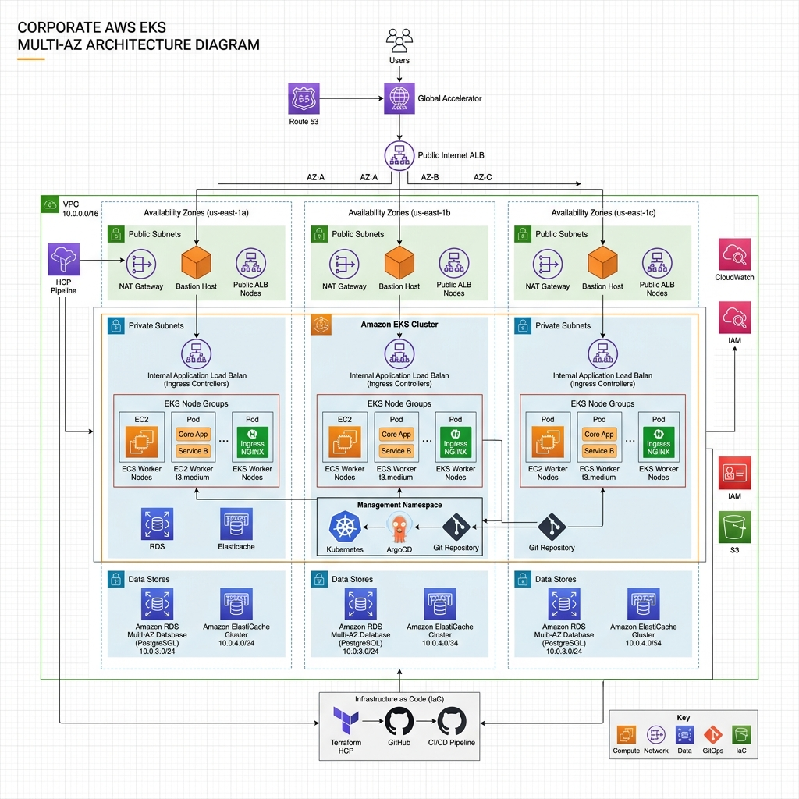
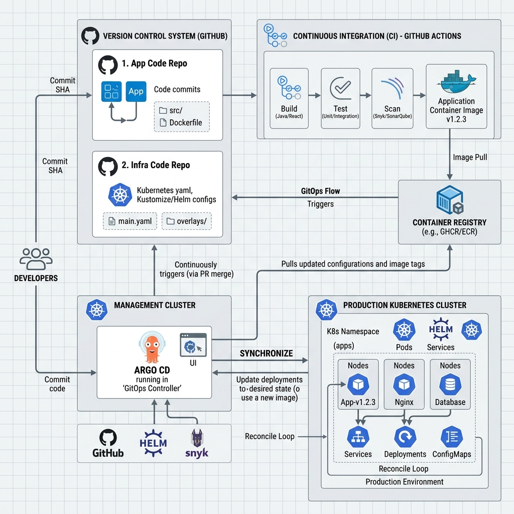
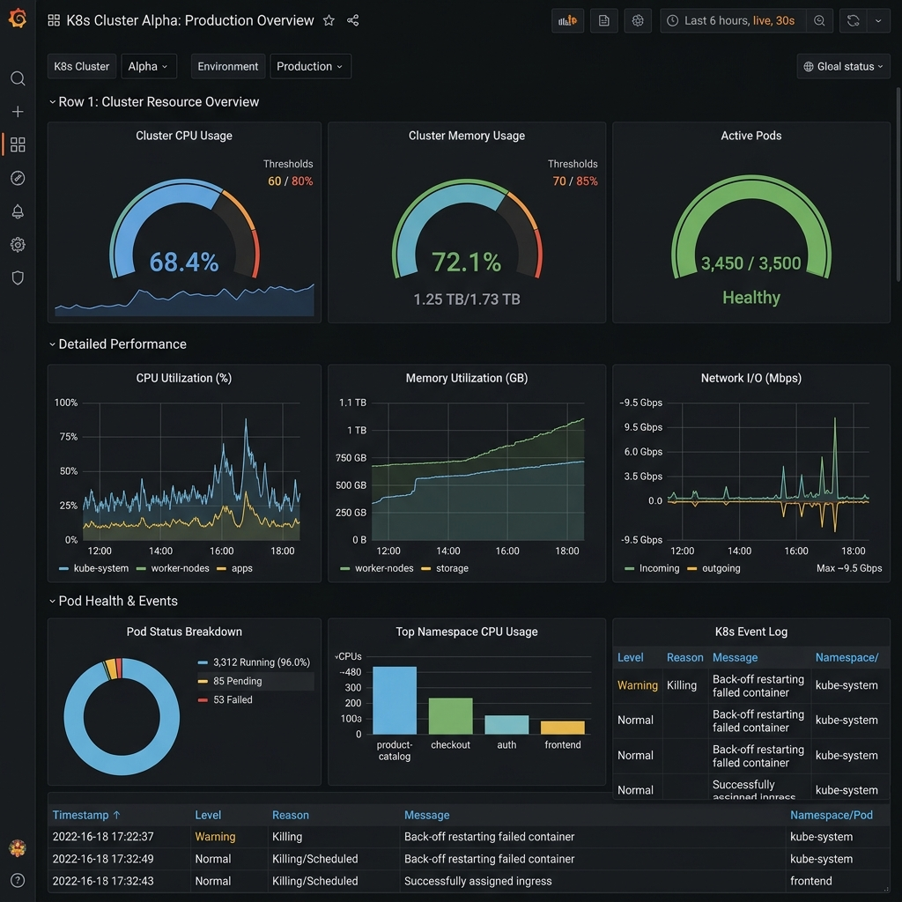

1. Executive Summary
This project demonstrates the design, implementation, automation, deployment, monitoring, security, and operations of a Production-Grade E-Commerce Platform running on AWS.
The platform is built using modern DevOps, Platform Engineering, and GitOps principles to provide:
- Automated Infrastructure Provisioning
- Secure Cloud Architecture
- Kubernetes-based Container Orchestration
- Continuous Integration and Continuous Deployment
- Centralized Monitoring and Logging
- Security and Compliance Controls
- Production Deployment Governance
The objective is to create a real-world enterprise platform similar to what is used in large organizations such as Amazon, Netflix, Walmart, Reliance Jio, and Fortune 500 companies.
2. Business Requirement
The business requires a scalable e-commerce platform capable of handling:
- User Registration
- Product Catalog Management
- Shopping Cart Operations
- Order Processing
- Authentication & Authorization
- Monitoring & Alerting
- Continuous Deployment
- High Availability
- Scalability
- Security
- Cost Optimization
- Disaster Recovery
- Production Operations
3. Solution Overview
The solution is built using a cloud-native architecture on AWS.

Figure 1: High-Level Architecture on AWS EKS
The entire platform runs on Kubernetes managed through Amazon EKS.
4. Technology Stack
| Technology | Purpose |
|---|---|
| AWS | Cloud Provider |
| VPC | Networking |
| EKS | Kubernetes |
| ECR | Container Registry |
| Route53 | DNS |
| ACM | SSL Certificates |
| IAM | Security |
| CloudWatch | Cloud Monitoring |
| Tool | Purpose |
|---|---|
| Terraform | Infrastructure Provisioning |
| AWS CLI | AWS Management |
| GitHub Actions | Automation |
| Tool | Purpose |
|---|---|
| Docker | Container Build |
| ECR | Image Storage |
| Kubernetes | Container Orchestration |
| EKS | Managed Kubernetes |
| Helm | Package Management |
| Tool | Purpose |
|---|---|
| ArgoCD | Continuous Deployment |
| GitOps Repository | Source of Truth |
| Tool | Purpose |
|---|---|
| Prometheus | Metrics Collection |
| Grafana | Visualization & Log Analysis |
| AlertManager | Alerting |
| Loki | Log Storage |
| Promtail | Log Collection |
| Tool | Purpose |
|---|---|
| GitHub OIDC | Authentication |
| IAM Roles | Authorization |
| IRSA | Pod Authentication |
| Trivy | Vulnerability Scanning |
| SonarCloud | Code Quality |
| Kubernetes Secrets | Secret Management |
5. Repository Architecture
The platform follows a Three Repository Model.
GitHub
│
├── techitfactory-infra
│
├── techitfactory-app
│
└── techitfactory-gitopstechitfactory-infra
│
├── bootstrap
├── modules
│ ├── vpc
│ ├── iam
│ ├── ecr
│ ├── eks
│ ├── monitoring
│ └── security
│
└── environments
├── dev
└── prod- Infrastructure Deployment
- Terraform Modules
- Networking
- IAM
- EKS
techitfactory-app
│
├── services
│ ├── frontend
│ ├── api-gateway
│ ├── user-service
│ ├── product-service
│ ├── order-service
│ └── cart-service
│
└── .github- Application Code
- Dockerfiles
- Unit Testing
- Build Pipelines
techitfactory-gitops
│
├── apps
├── base
└── environments
├── dev
└── prod- Kubernetes Manifests
- ArgoCD Applications
- Environment Configuration
6. Infrastructure Architecture
VPC CIDR: 10.0.0.0/16
10.0.1.0/24 10.0.2.0/24 — used for NAT Gateway and NLB.
10.0.11.0/24 10.0.12.0/24 — used for EKS Nodes and Application Pods.
| Component | Role |
|---|---|
| Internet Gateway | Provides internet access |
| NAT Gateway | Allows private resources to access internet |
| Route Tables | Control network routing |
| Security Groups | Firewall at instance level |
7. Kubernetes Architecture
EKS Cluster
│
├── Control Plane
│
└── Managed Node Groupsargocd monitoring techitfactory
| Component | Role |
|---|---|
| Deployments | Manage pods |
| Services | Expose applications |
| Ingress | Provides external access |
| ConfigMaps | Store configuration |
| Secrets | Store sensitive information |
8. Application Architecture
| Service | Technology / Responsibilities |
|---|---|
| Frontend | NGINX, HTML, CSS, JavaScript — User Interface, Product Display |
| API Gateway | Central Entry Point, Authentication, Request Routing |
| User Service | User Management, JWT Authentication |
| Product Service | Product Catalog |
| Cart Service | Cart Management |
| Order Service | Order Processing |
| Store | Used By | Purpose |
|---|---|---|
| PostgreSQL (RDS) | User, Product, Order Service | Persistent relational data |
| Redis (ElastiCache) | Cart Service | Fast in-memory cart & sessions |
- RDS Multi-AZ for High Availability
- Automated Daily Snapshots
- Credentials stored in AWS Secrets Manager
- Databases in Private Subnets only
9. GitOps Architecture

Figure 2: GitOps Workflow with ArgoCD and GitHub Actions
- ArgoCD Server
- ArgoCD Repo Server
- Application Controller
- Redis
Root App
│
├── Frontend
├── API Gateway
├── User Service
├── Product Service
├── Order Service
├── Cart Service
└── MonitoringSingle Source of Truth · Automatic Sync · Drift Detection · Rollback
10. CI/CD Architecture
11. Monitoring Architecture

Figure 3: Enterprise-Grade Observability Dashboard
| Tool | Coverage |
|---|---|
| Prometheus | CPU Usage, Memory Usage, Pod Metrics, Node Metrics |
| Grafana | Cluster Dashboard, Node Dashboard, Application Dashboard |
| AlertManager | High CPU, High Memory, Pod Crash, Node Failure |
12. Logging Architecture
- Centralized Logging
- Log Search
- Error Investigation
13. Security Architecture
No Access Keys required — GitHub Actions authenticates to AWS through short-lived OIDC tokens.
| Mechanism | Controls |
|---|---|
| IAM | AWS Access |
| IRSA | Pod Access |
| RBAC | Kubernetes Access |
- Trivy — scans Docker images
- ECR Scan — scans container images
- Kubernetes Secrets
- AWS Secrets Manager
14. Production Deployment Strategy
15. Observability Strategy
| Concern | Tool |
|---|---|
| Metrics | Prometheus |
| Dashboards | Grafana |
| Logs | Loki |
| Alerts | AlertManager |
16. Scalability Strategy
Min Pods = 2 Max Pods = 10 — scales based on CPU and Memory.
Automatically adds nodes and removes nodes based on demand.
17. Disaster Recovery
Terraform state stored in an S3 Backend.
Backup of Deployments, Services, ConfigMaps, and Secrets.
| Objective | Target |
|---|---|
| RTO — Recovery Time Objective | 30 Minutes |
| RPO — Recovery Point Objective | 15 Minutes |
18. Operational Runbook
kubectl get nodes
kubectl get pods -Aargocd app list
argocd app sync APP_NAMEkubectl logs PODkubectl top nodes
kubectl top pods19. DevOps Best Practices Implemented
- Infrastructure as Code
- GitOps
- Continuous Integration
- Continuous Deployment
- Automated Security Scanning
- Centralized Monitoring
- Centralized Logging
- Container Security
- Non-Root Containers
- Network Policies
- Production Approval Gates
- Disaster Recovery
- Autoscaling
20. Key Skills Demonstrated
| Area | Skills |
|---|---|
| AWS | VPC, IAM, EKS, ECR, Route53, ACM |
| Terraform | Modules, Remote State, Workspaces |
| Kubernetes | Deployments, Services, Ingress, HPA, RBAC |
| DevOps | GitHub Actions, CI/CD, GitOps |
| Observability | Prometheus, Grafana, Loki |
| Security | OIDC, Trivy, IRSA, RBAC |
21. Rollback Strategy
- Every deployment is a Git commit — rollback = revert commit
- Kubernetes keeps previous ReplicaSets for instant rollback
- Database changes use backward-compatible migrations
22. Cost Optimization (FinOps)
| Strategy | Implementation |
|---|---|
| Right-Sizing | Resource requests/limits tuned from metrics |
| Autoscaling | HPA + Cluster Autoscaler — pay for demand |
| Spot Instances | Non-critical node groups on EC2 Spot |
| Single NAT Gateway | Dev environment cost reduction |
| ECR Lifecycle Policies | Auto-delete old container images |
| Monitoring | CloudWatch billing alarms + cost tags |
23. Performance & Load Testing
Tools: k6 for HTTP load testing, with Grafana dashboards observed during test runs.
- Application behavior validated under 500+ concurrent users
- HPA scale-out and scale-in verified under load
- p95 latency within SLO before production release
Project Outcome
Successfully designed and implemented a complete production-grade Kubernetes platform using AWS, Terraform, GitHub Actions, ArgoCD, Prometheus, Grafana, Loki, and EKS. The platform supports automated infrastructure provisioning, GitOps-based deployments, centralized monitoring and logging, security controls, autoscaling, and production deployment governance — providing a real-world DevOps and Platform Engineering implementation suitable for enterprise environments.